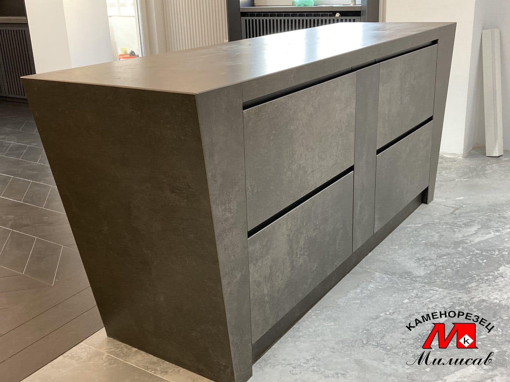
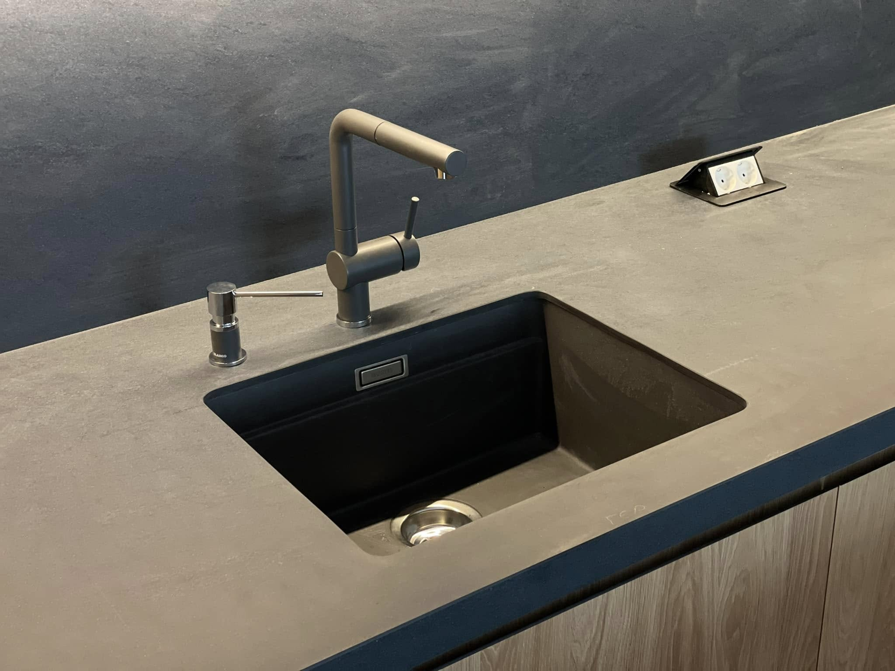
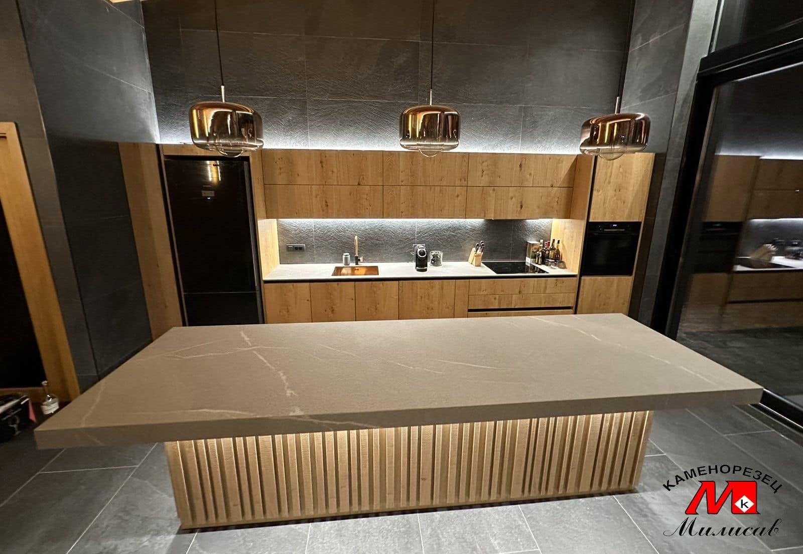
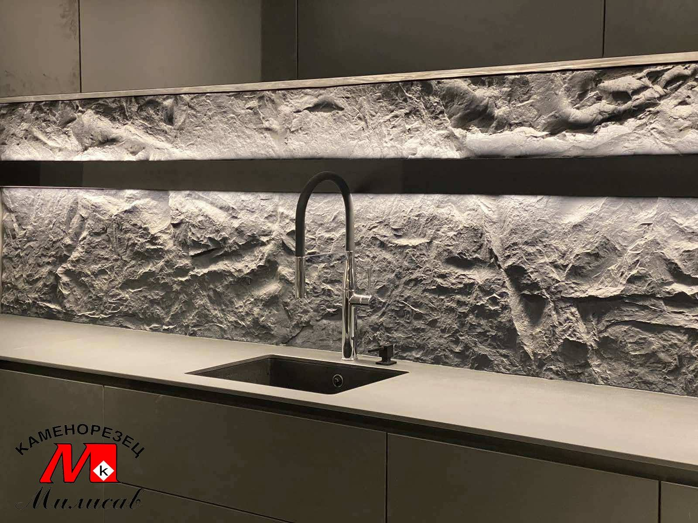

„Луѓето се вистински мајстори. Ни направија споменик за татко ми точно како што сакавме.“— Горан П.
1 / 9
Над 30 години искуство во изработка на споменици, ентериери и камени елементи.
Од 2010 година, СТОУН КМ ГРУП (Stone KM Group) посветено создава уникатни и функционални ентериерни решенија од мермер, гранит и ламинам, со цел секој простор да добие препознатлив изглед, трајност и прецизно изработени детали.
Нашата работа се темели на внимателно избран спој од современа технологија, прецизна обработка и долгогодишно искуство. Веруваме дека квалитетниот производ не е само резултат на добар материјал, туку и на начинот на кој тој материјал е обработен, обликуван и вклопен во просторот.
Од една голема табла мермер, гранит или ламинам, создававме и создаваме финален производ кој е внимателно испланиран, прецизно обработен и прилагоден според конкретните димензии, потреби и стил на секој проект. Секој елемент се изработува со особено внимание кон линиите, споевите, завршната обработка и целокупната естетика.
Целиот процес го реализираме со сопствено кроење, CNC обработка, доработка и монтажа, што ни овозможува подобра контрола врз секоја фаза од изработката и високо ниво на прецизност во финалниот производ.
Без разлика дали станува збор за модерен дом, деловен простор, ресторан, хотел или друг ентериер, пристапуваме кон секој проект индивидуално. Го проучуваме просторот, ги разбираме потребите и идејата на клиентот и потоа ја претвораме во конкретно и функционално решение.
Нашата цел не е само да изработиме производ од камен или ламинам, туку да создадеме решение кое природно се вклопува во просторот и остава впечаток со својот изглед и изработка.
Секој проект го започнуваме со разбирање на просторот, идејата и потребите на клиентот, а го завршуваме со прецизна реализација и внимателна монтажа на финалниот производ.
Со текот на годините стекнавме искуство во реализација на различни видови проекти, од индивидуални ентериери и приватни домови до поголеми деловни и комерцијални простори. Нашата работа опфаќа проекти низ цела Македонија, како и реализации во странство.
Соработуваме со клиенти, архитекти, дизајнери и изведувачи кои бараат сигурен партнер за обработка и финална реализација на камени и ламинамски површини. Од првичната идеја и мерење, преку прецизната обработка, па сè до конечната монтажа, посветени сме на тоа секој проект да биде реализиран со внимание и професионален пристап.
СТОУН КМ ГРУП – од материјал до готово решение, создадено според вашиот простор.

Изработка и монтажа на надгробни споменици по мерка, со уникатен дизајн и гравирање.

Камени скали, фасадни облоги, столбови, оквири околу прозорци и надворешно уредување.

Камини, плочи за кујни и бањи, како и други прецизни камени елементи за внатрешен простор.

Камени вазни, скулптури, чешми и украсни елементи рачно обработени од камен.
„Луѓето се вистински мајстори. Ни направија споменик за татко ми точно како што сакавме.“— Горан П.
„Ретко се наоѓаат вакви чесни луѓе.“— Елена М.
„Се договоривме буквално за 10 минути.“— Александар Т.
„Многу ни помогнаа со искрен совет.“— Билјана К.
„Фирмата ни ги среди скалите и каминот.“— Цветан Ј.
„Ни ја направија кујната од мермер.“— Марија С.
„Најдовме луѓе кои си ја знаат работата.“— Андреа М.
„Платото околу чешмата е одлично.“— Димитар А.
„Од мерење до монтажа сё завршија за неколку дена.“— Ана Д.
Адреса: Улица "Камена" бр. 10, Гостивар
Телефони:
078 - 832 - 211
071 - 347 - 868
075 - 226 - 200
Е-пошта: kamenorezecmilisav2010@gmail.com